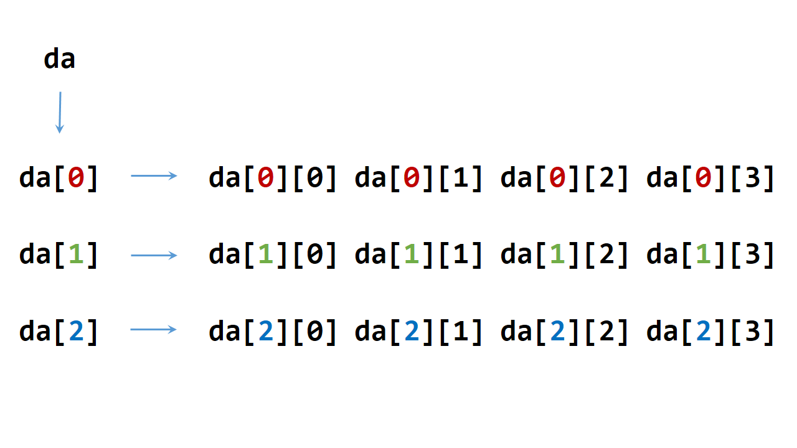

2. 数组
2.1. 指针
1#include <ctime>
2using namespace std;
3
4struct TreeNode
5{
6 int val;
7 TreeNode* left;
8 TreeNode* right;
9 TreeNode(int x) :val(x), left(nullptr), right(nullptr){} /* 唯一的构造函数，必须给定参数x */
10};
11
12int main(int argc, char ** argv)
13{
14 //int* p = new int(1); /* 这两行与下面三行等效 */
15 //cout << *p << endl;
16 int* p = new int;
17 *p = 1; /* p已经申请了内存空间，可以直接赋值 */
18 cout << *p << endl;
19
20 TreeNode* q = new TreeNode(10);
21 cout << q->val << endl;
22
23 TreeNode node(100);
24 TreeNode* r = &node; /* r 不能delete */
25 cout << r->val << endl;
26
27 delete p;
28 delete q;
29
30 return 0;
31}
Note
两个指针变量的值相同，则这两个指针 指向同一内存单元地址 或都为 空指针 。不存在多个变量占用同一内存单元的情形。
2.2. 指向函数的指针
定义形式:
函数返回值类型 (*指针变量名)(参数列表)
指向函数的指针是让函数的入口地址赋给指针变量，类似于指向数组的指针是把数组首地址赋给指针变量。
1#include<iostream>
2using namespace std;
3
4double square(double x)
5{
6 return x * x;
7}
8
9int main()
10{
11 double (*p)(double x);
12 p = square; // 用函数名square初始化指针
13 cout << square(1.6) << endl;
14 cout << p(1.6) << endl;
15 cout << (*p)(1.6) << endl; // 三者等效
16 return 0;
17}
还可以定义指针数组，
1// 定义一个指向函数的指针类型，名为 MenuFood。函数参数列表为空，返回值为空。
2typedef void (* MenuFood)();
3
4void food1();
5void food2();
6void food3();
7void food4();
8
9MenuFood p[] = {food1, food2, food3, food4}; // 该数组的每一个元素都是指向函数的指针。
Note
指针数组：类型 *数组名[长度]
char *name[] = {"allen", "martin", "clark"};
指向行向量的指针变量：类型 (*变量名)[长度]
int (*pa)[10];
int *p;
int a[3][10];
p = a[0]; // 或 &a[0][0]
pa = a; // 使用：*(*(pa + i) + j)
2.3. 动态数组
声明与定义一个动态数组的格式一般如下：
1int** da = new int*[r];
2for(int i = 0; i < r; ++i)
3{
4 da[i] = new int[c];
5}
內存释放：
1for(int i = 0; i < r; ++i)
2{
3 delete[] da[i]; // 释放指针指向的内存空间
4 da[i] = nullptr; // 置为空指针，防止出现‘野指针’
5}
6delete[] da;
7da = nullptr;
内存组织形式:
动态数组在堆（heap）区分配内存，静态数组在栈（stack）区分配內存。
假如我们已经得到一个 3x4 的动态数组 da，其指针关系如下：
{kind=link}
其中，da[0]、da[1]、da[2]的 地址 是连续的，依次相差 sizeof(da[0]) （一个指针的大小，32 位编译器下为 4，64 位编译器下为 8），比如:
&da[0] + sizeof(da[0]) == &da[1]
如果把 da 看作 3 行 4 列的二维数组，那么 da 的每一行元素的地址是连续的，依次相差 sizeof(da[0][0]) ；但是行与行之间的地址是不连续的，比如:
da[0][0], da[0][1], da[0][2], da[0][3] 地址连续；
da[1][0], da[1][1], da[1][2], da[1][3] 地址连续；
da[0][3] 与 da[1][0] 地址不连续；
另外:
&da, &da[0], &da[0][0] 三者的数值是不相等的。
如果数组是静态数组，则 &da, &da[0], &da[0][0] 三者的数值是相等的；
且静态数组的行与行之间的地址连续。
Note
对于动态数组，指针的地址和指针的值不能混淆，我们讲 da[0]、da[1]、da[2] 的地址是连续的，但是他们本身的值没有关系，即 da[0] + sizeof(da[0]) != da[1] 。
注意有没有 & 的区别。
如果想要定义连续内存空间的动态数组，可以按如下方式进行：
1// int** f; // f的声明
2template<typename T>
3void Init2DArray(T** &f, const int row, const int col)
4{
5 f = new T*[row];
6 f[0] = new T[row * col];
7 for(int i = 1; i < col; ++i)
8 {
9 f[i] = f[0] + col * i;
10 }
11}
内存释放方式如下：
1template<typename T>
2void Delete2DArray(T** &f)
3{
4 if(f != nullptr)
5 {
6 if(f[0] != nullptr)
7 {
8 delete[] f[0];
9 f[0] = nullptr;
10 }
11 delete[] f;
12 f = nullptr;
13 }
14}
上面的 Init2DArray 在申请内存的时候，建立了 row x col 的二维动态数组。实际上，二维动态数组不强求列对齐，即各行的长度可以不一样，
因此可以下面像这样定义:
f[i] = f[0] + offset_i; // offset_i是第i行首地址相对于第0行首地址的偏移量
2.4. 另类的数组表达
有如下程序：
1int a[10];
2int b[7][5];
3
40[a] = 5;
59[a] = 7;
60[b][0] = 1;
70[b][1] = 2;
80[b][2] = 3;
这些表达式能够正常编译和执行，是因为对于 C/C++ 而言:
a[0] 等价于 *a 等价于 *(a+0) 等价于 *(0+a) ==> 等价于 0[a];
所以可以推出二维表达式:
b[0][1] = *(b[0] + 1) = *(1 + b[0]) = 1[b[0]]
b[0][1] = *(*(b+0) + 1) = *(*(0+b) + 1) = *(0[b] + 1) = 0[b][1]
b[0][1] = *(*(b+0) + 1) = *(1 + *(0+b)) = 1[0[b]]
Note
b: 相当于 &b[0]，第 0 行的首地址。
*b: 相当于 b[0]，&b[0][0]，第 0 行第 0 列的首地址。
b[0][1] 等价于 *(b[0] + 1)，*(*(b+0)+1)，(*(b+0))[1]（ [] 优先级高于 * ）。
2.5. 数组实参
以 非引用 类型传递数组实参时，数组会退化为指针，形参复制的是这个指针的值（ 指向数组的第一个元素）。通过指针形参做的任何改变，都是在修改数组元素本身。
如果以 引用 形式传递数组实参，那么编译器不会将数组实参转化为指针，而是传递数组的引用本身。
编译器会检查数组实参的大小与形参大小是否匹配。
非引用形式：
1void func1(int *arr); // 函数可能会改变数组
2void func2(const int *arr); // 不能改变数组
3
4void func3(int arr[100])
5{
6 cout << sizeof(arr) << endl; // 4
7}
8// int arr[100];
9// func3(arr); // 调用func3
引用形式：
1void func4(int (&arr)[100])
2{
3 cout << sizeof(arr) << endl; // 100
4}
5// int arr[100];
6// func4(arr); // 调用func4
2.6. 数组地址与加法
假设我们已经定义了一个数组：
int a[L][M][N];
1. a , a[0] , a[0][0] , &a , &a[0] , &a[0][0] , &a[0][0][0] 的数值都是一样的。
2. &a 是 4 级指针, 类型是 int (*)[L][M][N] ，指向 a 这个数组。
3. a 是 3 级指针，类型是 int (*)[M][N] ，三维数组的数组名，是数组 a 的首地址。
4. 大小计算如下:
sizeof(&a) = 4; // 指针的大小，32 位编译器
sizeof(a[0][0][0]) = sizeof(int);
sizeof(a[0][0]) = N * sizeof(int);
sizeof(a[0]) = M * N * sizeof(int);
sizeof(a) = L * M * N * sizeof(int); // 整个数组的大小
5. 加法运算:
a + i = a + i * sizeof(a[0]);
&a + i = a + i * sizeof(a);
这里（&a + 1）就已经跳过了整个数组。
6. 定义指针 int *ptr = (int *)(&a + 1) ，则 (ptr - 1) 指向数组a的最后一个元素。
2.7. malloc/free与new/delete
相同点
都可用于申请动态内存和释放内存。
不同点
属性
malloc/free是 C/C++ 的 库函数 ，在头文件stdlib.h中声明。void *malloc(size_t size); void free(void *pointer);
因为 malloc 函数的返回值类型为
void*，所以需要在函数前面进行相应的强制类型转换。new/delete是 C++ 的 运算符 。参数
使用 new 操作符申请内存分配时无须指定内存块的大小，编译器会根据类型信息自行计算；
int *pi = new int[n]; // 指针 pi 指向长度为 n 的数组，未初始化
而 malloc 则需要显式地指出所需内存的尺寸。
int *p = (int *)malloc(25*sizeof(int)); // 指向整型的指针 p 指向一个 25 个 int 整型空间的地址 int *p = (int *)malloc(99); // 指向整型的指针 p 指向一个大小为 99 字节的内存的地址
malloc 可以分配任意字节，new 只能分配实例所占内存的整数倍数大小。
分配失败
new内存分配失败时，会抛出
bad_alloc异常；malloc 分配内存失败时返回NULL。功能
new 做两件事，先分配内存，再调用类的构造函数；同样，delete 会调用类的析构函数和释放内存。而 malloc 和 free 只是分配和释放内存。
对于内部数据类型（如
int,char等）的对象，没有构造和析构的过程，对它们而言，malloc/free和new/delete等价。对于非内部数据类型的对象而言，
malloc/free无法满足动态对象的要求。重载（overload）
new/delete可以重载成为函数，可以自定义申请过程，比如记录申请内存的长度以及跟踪每个对象的指针。malloc/free不能重载。
Warning
new 和 delete 一定要配对使用；new 对应 delete，new [] 对应 delete []。
对空指针使用 delete 是安全的。
不能使用 delete 释放绑定到对象的指针。
int val = 5; int* p = &val; delete p; // error, memory not allocated by new
2.8. 参考资料
静态数组与动态数组：
浅谈new/delete和malloc/free的用法与区别：
malloc/free与new/delete的区别：